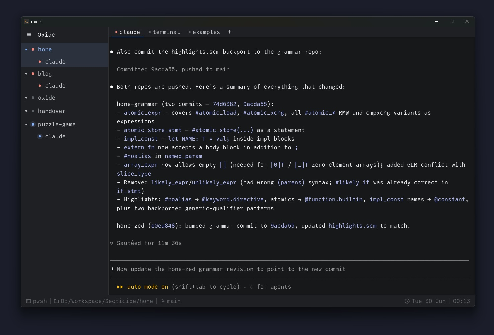

Generative AI in games has been met with aggressive backlash across the board. Generated textures, AI voice acting, AI composed music, we've seen it all, and both players and developers have pushed back hard. The tools were sold as a creative shortcut, but it was rarely subtle that the real goal was cutting costs by replacing the humans doing the work.
Most of the resulting conversation has been negative, and I think rightly so. Shipping AI-generated audio or entire voiced characters as final products isn't creative efficiency, it's a money-saving shortcut devoid of creative value. The problem isn't the technology; it's using it as a pure replacement for skilled creative work.
When coding agents started popping up, my reaction was shaped almost entirely by that experience. The pitch felt identical: here is something that produces something like the skilled part of the job, quickly, without requiring you to actually know how to do it. Having an agent generate a texture, write a novel or an application, the pattern looked the same.
The tool wasn't getting smarter - I was getting better at using it.
First Impressions
My own experiments started small - isolated tasks, nothing requiring much judgment. From there I worked up to larger projects, getting a feel for where the tool actually landed. But the sharpest lessons came from code review. Early adopters were already leaning on agents heavily, and the patterns in their output were hard to miss: unnecessary allocations, incorrect or inefficient use of the standard library, subtle errors buried in otherwise reasonable-looking code.
That set the tone. The agent was consistently good at producing code that looked correct on first read. The structure was sensible, the naming reasonable, the general shape of the solution sound. But the details were frequently wrong. Deprecated APIs, invented function signatures, logic that solved a slightly different problem than the one I had described. Code reviews were no better, often verbose and surface-level, confidently noting the obvious while missing the details that actually mattered. Each piece of output required careful review, and reviewing unfamiliar code takes time. The productivity gain kept failing to materialise.
The deeper problem was trust. When I write code, I know what I've written. I can hold a mental model of it, reason about edge cases, anticipate where it might break. Code produced by an agent comes with none of that. Before I can use it, I have to read it well enough to own it. For trivial boilerplate that's acceptable. For anything with real complexity, the review cost ate most of the benefit.
After a few weeks I had largely stopped reaching for it. The tool worked in a narrow band and made confident mistakes everywhere else. That felt familiar.
The Shift
Then I put aside whatever opinions I'd built up and decided to learn it the same way I'd learn any other tool. I spent a week of evenings rebuilding the same project: a small Raylib-inspired game framework in Rust, built on top of Win32, D3D11 and XAudio2, using agents exclusively for development to learn how to best use them. The goal wasn't to ship something; it was to find where the tool was actually useful.
The pattern that emerged was consistent. Boilerplate was fast and reliable. Scaffolding a new module, wiring up an API I hadn't used before, writing out repetitive input binding code - the agent handled all of this well. The failures clustered around anything that required genuine design judgment: how to structure a render target abstraction, where to draw the boundary between systems. Those decisions still needed to come from me. The agent would produce an answer, but it was rarely the right answer for the specific shape of the project.
The most impactful factor is context management. Early on I was either submitting isolated prompts or letting conversations run too long, and the results suffered for both. The more I learned to carry the right context forward, frame problems precisely and manage what the agent knew; the better the output became. The right framing, the right scope, the right background information - these decisions consistently made the difference between an agent that produced something useful and one that produced something littered with misunderstandings and errors.
The agent is no closer to the finished product than IntelliSense is.
Around the same time I started to learn of different tools for managing agents: Herdr, Alta, iTerm2 and others. I used Herdr for a while, but it had gaps. That, combined with the ability to rapidly prototype with agents, eventually pushed me to start a larger project of my own, which I'll cover in the next section.
The conclusion I landed on wasn't enthusiasm exactly. It was more pragmatic than that. Agents are not going away, and a significant part of the industry is already building workflows around them. That's true whether I find them compelling or not. The question stopped being "is this worth using" and became the same question I ask about any tool: what does it do well, what does it do badly, and how do I get the most out of it?
Harnessing Agents
Oxide, the project I mentioned at the end of the last section, is a GPU-accelerated terminal emulator built around a single idea: make agents a first-class part of the development environment, rather than something running off to the side that I had to keep glancing at.
It is like tmux: terminal and session management, workspaces, tabs, pane splits. On top of that sits agent management and status tracking - a sidebar that tracks the state of Claude Code running in the current session. Working, blocked waiting on input, idle. That status is kept accurate through hooks wired into Claude Code's settings, when Claude transitions between states it updates oxide via IPC. Beyond the agent itself, oxide also tracks the status of other common tools - compilers, build systems, task runners - by traversing the child process tree of each shell, giving a live picture of what is actually running at any point.

A significant portion of oxide was written with agents. The same tool I was building support for, I was using to build it. At one point I had Claude building the project, launching it, taking a screenshot and analysing the result to debug a text rendering issue - a good example of just how many different ways agents can be put to work, and how flexible they are when you start chaining capabilities together. The gaps and rough edges became obvious quickly, which is the most honest form of product feedback.
How I Work With Agents Now
How I use agents day to day is often based on task type. Anything that is repetitive, well-defined or largely mechanical is a good candidate. Firing off CI jobs and checking results, drafting a pull request description, filing a Jira ticket from a bug report, bulk Git operations - the kind of work that needs doing but doesn't require much creative thought. Agents handle this well, and more importantly, I no longer have to manage a sea of browser tabs to operate! The output is reviewable, the scope is bounded, and the cost of a mistake is low.
The other area where they consistently add value is analysis. Given the right context, agents are good at reasoning across a large surface area quickly - tracing a bug through multiple files, cross-referencing behaviour across a codebase, identifying where a subtle invariant is being violated. Work that a developer could do, but would take time to build up the mental model for. The agent doesn't need that ramp-up time in the same way, which makes it a useful first pass before committing to a deeper investigation.
With a decent agent manager you can also run multiple agents concurrently in separate git worktrees, each working on a different task while you continue with your own work. Initial investigations, background research, exploratory changes that may or may not pan out - work you would otherwise have to context switch into yourself, now running in parallel.
None of these use cases asks the agent to make the important decisions, and that is by design. It is executing well-understood tasks, narrowing a search space, or doing the legwork so you don't have to. The judgment - what to build, how to structure it, whether the analysis conclusion is actually correct - still sits with the developer.
Conclusion
The problem with my initial framing was throwing coding agents into the same category as generated textures or AI voice acting. In those cases, the output is the product - it reaches the end user with nothing in between. The creative judgment is either absent or irrelevant by the time it ships.
With a coding agent, you never remove yourself from the loop. You read the diff, reason about the architecture, decide whether the analysis is sound. The agent is no closer to the finished product than IntelliSense is. The comparison was wrong because the relationship to the work is fundamentally different.
That said, one criticism does hold up: training data. Models trained on vast amounts of existing work trend toward the centre of the bell curve - competent, average, unremarkable. For creative work that is a serious problem, but for mechanical tasks it is much less of an issue. Mediocre code is absolutely fine as part of a prototype, easy to throw away too! Mediocre architectural decisions are not. Knowing where that puts you is what makes the tool usable.
These realisations are what refined my view. Not blinded by enthusiasm for the technology, but the recognition that whether to use agents is the same question you'd ask of any other tool. Does it handle the parts that don't need my full attention? Does it free me up for the work that does? If yes, it earns its place in the workflow, the same way a linter or a debugger does. Nothing more, and nothing less.